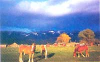
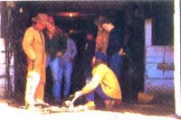
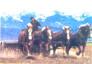
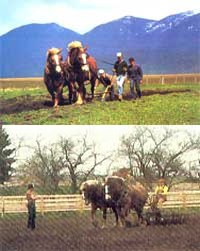
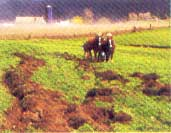
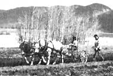
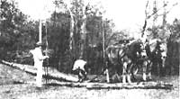
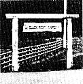

In which a staffer finds himself (gulp!) behind the traces of some massive work animals.
Last May, MOTHER sent Frank Sides (one of our Eco-Village gardeners and the caretaker of Molly, the magazine's work pony) and associate editor Terry Krautwurst to Polson, Montana, to take a one-week course on driving and farming with draft horses. The following excerpts from Terry's journal provide some firsthand insights into a not-easy-to-learn homestead skill and the "do-it-yourselfer's jitters," as well!
I have to laugh when I think how my grandfather might have reacted to the notion of traveling 2,000 miles by jet just to learn how to drive draft horses. Surely Grandpa, who never did ride in an airplane but who undoubtedly spent much of his life behind a plow horse, would have been amused. But, of course, times have changed since Gramps, like all farm boys of his day, learned how to work a draft animal by helping his own father. There just aren't as many farmers around these days who still practice the art... and those who do are generally far too busy coaxing a living from their farms to stop long enough to show a greenhorn the basics.
In recent years, though, a resurgence of interest in farming with draft horses has spawned a handful of clinics, workshops, and schools devoted to providing expert introductory instruction. Frank Sides and I have come to one such place: the Slack Point Ranch School of Driving and Farming With Draft Horses, in Poison, Montana.
Frank and I arrived in Poison late this afternoon, and after spending an hour or so reconnoitering this pleasant community of ranchers and loggers, drove to Slack Point Ranch, a mile or so outside of town. The place is sheer beauty: 550 acres of green, rolling valley land, located smack-dab on the south shore of Flathead Lake, the largest freshwater lake west of the Mississippi. A few miles to the east are the snow-covered peaks of the Mission Range, and the Swan Range rises above the horizon to the north. Russet red outbuildings and barns punctuate the ranch's neatly fenced pastures. Off in the distance we could see a pair of honey-colored Belgian horses grazing. Even from afar they look big. (All in all, I'm told, there are nearly 90 purebred Belgians here, and some 300 registered shorthorn cattle. This is a working ranch, almost entirely horse-powered.)
We were greeted at the bunkhouse-a typical-looking, single-level suburban home-by Mary, the ranch's affable cook. Over the next couple of hours, five more students arrived for the week's class: Buck, a spot welder from Minnesota... Doug and Vicki, a couple from Chicago (he's a real estate broker and she's a dental hygienist)... Wendy, a young farm worker from Oregon... and Art, a computer software company president from the Los Angeles area.
We're a diverse group, certainly, but almost everyone here shares longtime involvement with horses (alas, I'm the lone exception). Some students, like Frank, have had experience with workhorses and have come here to pick up additional skills. The others are familiar with riding horses, but not with draft animals (the difference being akin to that between an MG and a GMC).
I, on the other hand, am a rank novice. I've been atop a saddle horse only once in my lifetime and have never had the opportunity to be around workhorses. The fact is, I'm no less apprehensive about driving a pair of powerful draft horses than Grandpa would have been about climbing aboard a flying machine. The school is going to be a personal challenge for me (and, I suspect, I will be a challenge for the school).
At the moment, the bunkhouse is quiet; it's late and everyone has gone to bed in anticipation of a long day tomorrow. Frank is sleeping soundly in the cot across from mine; I wish I could be as calm, but I have to admit I'm not. It's this vision I keep having: an enormous Belgian gelding, eyes blazing with fury, dragging my harness-tangled carcass across the Montana countryside.
What a day this has been!
We spent much of the morning hunched over a pile of buckles, snaps, and leather straps on the floor of the main barn, trying our best to restore the perplexing mass to its original form: a fully assembled horse harness.
Rod Bailey, our instructor, was the instigator of this exercise. Rod-apparently a firm believer in hands-on learning-was not content to simply show us the various components of a harness and how they work together to transfer the power of a horse to whatever it's hitched to. Nor was he content to see us struggle only once to assemble all the parts (of which there are many: hames, top hames strap, bottom hames strap, back straps, back pad, spider, brichen, breast straps, belly band, quarter straps, tugs, trace chains, Conway buckles, keepers, and more).
As soon as we had almost solved the puzzle, Rod took the rigging apart again, dumped the pieces to a second harness on top, and mixed the whole caboodle together. "Now, there's a challenge for you," he said, and ambled away.
Rod was right; it was a challenge, but somehow, eventually, with the seven of us working as a team, we managed to produce two reasonable facsimiles of horse harness (with, ummm, a few "extra" parts left over).
Imagine hoisting a wet mattress onto your shoulder, carrying it a dozen yards, and then hefting the whole thing up onto the top of an eight-foot stone wall. Putting a harness on a full-grown Belgian is a lot like that, only more complicated. Rod led Sharon, one of the ranch's working mares, out from her stall and demonstrated the procedure for us. It's a very structured, methodical process-a series of steps that our teacher emphasized should always be performed in the same order, so that both you and your horse know what to expect next, and so that the sequence becomes automatic to you. Forgetting a step (say, neglecting to attach a strap) can render a harness as effective for pulling a load as a broken guitar string is for making music. And in some cases, such an oversight can result in a serious accident.
One by one, each of us tried to imitate what Rod had made look so easy (but what I quickly discovered, when it came my turn, is no cinch): Slip Sharon's collar over her neck and fasten the strap tight (the collar is surprisingly heavy and unwieldy, while the horse's neck is as big around as I am!)... lift the harness off its hook near the stall, first slipping your right arm under the spider and back band, next hoisting the spider onto your right shoulder, and then lifting the hames up and off the hook with both hands (I feel as though the harness is a web and I'm the fly)... heft the harness, hames first and then the back band and spider and brichen, onto Sharon (the harness must weigh at least 35 pounds, and the horse's back is almost over my head). . . then fasten the straps and bands and buckles tight, in proper order (let's see; first, pull the bottom hames strap taut, then clip the breast band to the hames ring, next buckle the belly band, then . . . what is that quarter strap doing over there?).
For the next hour or so, we repeated the procedure, over and over, using Sharon and her partner, Cora, both of whom stood patiently as we put the harnesses on and took them off, put them on and took them off. By the time Rod announced we should be heading back to the bunkhouse for lunch, we were harnessing the horses like pros . . . well, semi -pios (well, semi -semi-pros).
We spent the first hour or two after lunch learning to ground-drive Sharon and Cora . . . that is, we practiced driving the two horses, hitched side by side, around the corral while walking behind them. I hadn't expected this to be easy, but I didn't know how right I was until I tried it.
The horses are steered by two long leather lines (calling them reins, I discovered to my embarrassment, is a horrendous faux pas). Each line is forked to form a Y. One end of the left line's Y is snapped to the left horse's left bit ring, and the other end of the Y to the right horse's left bit ring. The right line is rigged the same way, only in reverse, so that its ends are clipped to the right bit rings. Thus, when you pull one line, both horses feel the command on the same side of their mouths and turn in that direction. If you pull back evenly on the lines, they stop.
Plus, of course, you give verbal commands at the same time you manipulate the lines. "Whoa" for stop and "giddup" for go are simple enough to remember, but I discovered that "gee" (pronounced as in "gee whiz") for right and "haw" for left are frustratingly easy to confuse. (Sharon and Cora displayed admirable tolerance on the several occasions when I pulled on the left line and said "gee," or the reverse.)
The really difficult part, though, is maintaining just the right amount of tension on the lines. The horses are amazingly responsive; the slightest movement of your hands elicits a reaction, so unless the signals you communicate through the lines are clear and consistent, you end up in a mess. If you don't give as much slack on one line as you take in on the other when turning, the horses get mixed signals and each tends to go in a somewhat different direction. If you want the team to go straight but fail to keep a constant, even pressure on the lines, you'll find yourself weaving right and left as the horses try to figure out just exactly where you do want them to go. And if you let the lines go completely slack, you relinquish control of the team entirely . . . and the horses are likely to drive you.
I'm surprised that steering two full-grown Belgians, each of which weighs nearly a ton, is such a delicate operation, demanding constant concentration. It's something akin to playing a 20-pound trout on four-pound-test line, but with a pole in each hand and a fish on each hook. Rod says it will take a while for us to develop a feel for it, and-in my case, at least-I'm sure that's true.
I can't say I'm encouraged by the way today's class ended.
We had progressed from taking turns steering the team around the corral to learning how to hitch the horses to a wagon. This involved, first of all, driving the team up to the wagon's tongue, at a nearly perpendicular angle, and then turning Sharon and Cora sharply at just the right moment so that they'd end up side by side in front of the wagon, with the tongue between them, ready to be hitched.
Rod emphasized that the steps involved in hitching a team, like those in harnessing a horse, should be perfomed in a specific order. If they're not, you risk ending up under a horse's hooves or the implement you're hitching to.
Rod demonstrated the routine: Slip the neck yoke onto the wagon tongue, and clip the yoke rings to the horses' breast straps. Next, moving behind the team, connect one horse's trace chains-the inner one first and then the outer one-to the wagon's doubletree, and then attach the other horse's trace chains in the same manner. To unhitch the team, he said, you simply reverse the steps.
"And now, kiddies," said Rod challengingly, "we'll see how much you've learned today. I want each of you to come up here, unhitch the team from the wagon, drive Sharon and Cora around the corral and back up to the wagon, and hitch them again."
I was not eager to do this (heck, I was still having trouble driving the horses in a straight line!). So I hung back, doing my best to appear inconspicuous, content to watch my fellow students take the test. One by one, Buck, Vicki, Art, Frank, Doug, and Wendy each went through the procedure, not always perfectly but nearly so, while the rest of us watched, silently rooting for our colleague to get it right.
Then Rod turned to me, cocked an eyebrow, and said, "You're next, Terry; you can't put it off any longer."
Something inside me snapped. My pulse raced. My mind went blank. I became the Woody Allen of draft-horsedom.
First, I tried to disconnect the yoke rings before unhooking the trace chains, instead of the other way around. I dropped the wagon tongue, barely missing my toe. I forgot to take in the slack on the lines before I said "giddup," and Sharon and Cora started off in different directions. I wove around the corral. I mistimed the turn into the wagon tongue and ended up with Sharon and Cora both to the left of the tongue and nearly facing one another.
It was, in short, a disaster-an undeniable confirmation of my greenhorn status.
Mary's good cooking tonight, and the encouraging words of my fellow students, have softened the blow to my ego. Still, I can't help but feel apprehensive about tomorrow. I'm not worried about the horses anymore; they're wonderful, gentle, patient, beautiful. No, it's me I'm concerned about. Will I ever get the hang of this?
I learned a lot today . . . mostly that I have a lot to learn.
We arrived at the barn this morning to find a familiar-looking pile of hardware and leather straps on the floor. "I just don't understand how that harness got that way," said Rod, scratching his head in mock puzzlement, "but I guess there's nothing to do now but have you people put it back together."
We did . . . and got it almost perfect. Only one piece was wrong: The top hames strap that I had put on backward.
Dan Morgan, Slack Point's other fine instructor/teamster, and Patti Brown, the ranch's effervescent young owner, joined Rod today to give us still more driving practice and to show us how to hitch to and use basic farm implements. They are superb teachers. I'm amazed at their knowledge (each has been around draft animals since childhood), as well as at their ability to communicate their know-how.
There were other newcomers to today's class, too. Since Cora is due to foal any time now, she and Sharon were put out to pasture and two new teams were substituted: Jan and Jean (Rod describes them as one of the top working Belgian teams in the country) and Meg and Madge, the ranch's mules.
I've become a confirmed Meg-and-Madge fan. They're as responsive as the horses, but smaller (and thus easier to harness and maneuver), as well as slower (which gives me more time to steer them).
I was especially glad to be working with Meg and Madge this afternoon, when we were learning how to operate a disk harrow and spring-tooth harrow. Both are fairly simple tools but take some getting used to. This is particularly true of the disk, on which you sit-perched precariously close to the cutting wheels-while you drive the team ("a harrowing experience," quipped one student). As I tried my best to scratch reasonably straight paths with the implements, Meg and Madge plodded along, tolerant of my tentative line-handling, always willing to swing back around and give me just one more try at getting this steering business right.
Unfortunately, I don't have it right just yet. As if to confirm that fact, I nearly took out a couple of sections offence with the hay wagon this afternoon, and on another occasion I forgot that when you drive a team (in this instance, Jan and Jean) down a hill, you should anticipate a slackening of the lines and take up the excess play in order to hold the horses back. The result of this oversight was a terrific (but entirely involuntary) Hollywood-style runaway-buckboard scene, with me at the helm, and Rod and the others holding on for dear life as the wagon careened down a grade and ( just barely ) across a narrow plank bridge.
The other students seem to be learning quickly. Can it be that some people just aren't meant for this?
Grandpa, if you were watching today, you must've had yourself a pretty good chuckle.
There were no piles of leather straps on the barn floor this morning, but as we proceeded to harness the teams, we discovered that a good many parts had been, uh, rearranged. A devious bunch, these teachers of ours.
Safety is stressed here. Our instructors have made it very clear that working around and with draft animals can be dangerous, and their constant cautionary tips are well-taken.
"Always speak to a hurse before you enter its stall. Most horses won't kick you intentionally, but they will kick reflexively if startled, or in response to a muscle twitch or a fly bite. So let the horse know you're around... and try to stay out of kicking range in any case."
"Keep your eye on your horses, their harnesses, the lines, and the hitch. Make a mental checklist and get in the habit of running through it constantly, automatically. Watch for loose buckles, frayed straps, broken hardware, anything out of the ordinary. Get so that you can spot trouble before it happens."
" Never trust your team entirely or leave it untied or unattended for even just a little while... no matter how well-trained, no matter how long you've worked with the horses, no matter how mild-mannered or predictable they may seem. You just never know-anything can happen, and if it happens when your guard is down, you can have a real rodeo on your hands." (Rod said this as we gazed somberly at a wooden wagon tongue that had been snapped clean in half last week during one such incident.)
We plowed today, taking turns using both a sulky (riding) plow hitched to Meg and Madge and a walking plow pulled by Jan and Jean.
I have a new respect for anyone who has ever worked a field with these implements. Using a walk-behind plow is particularly tough. A moldboard blade is a slippery devil to control with two mere human hands; it's eager to dip too deep or pop out of the ground entirely or stray to either side (or any combination thereof) in the twinkling of an eye. Exerting too much pressure on the handles, in any direction, causes the problems. So the trick is to relax and let the plow and horses do the work.
Of course, that's easier said than done... as evidenced by the rather peculiar plowed field we produced today (the place looks as though an enormous drunken mole has run amok in it).
And to think we practiced plowing the "easy" way: with one person driving the team while another handled the plow! Most farmers did the job solo, using their hands to hold the plow and their shoulders to maneuver the lines, which were tied together and looped over one shoulder and under the opposite arm. What a feat!
At one point today, one of the students, while driving Jan and Jean, turned to Rod and asked why the horses were easier to handle and more cooperative than they were yesterday.
"Heck, they're not acting any differently at all," Rod replied with a wry grin. " You're the ones who are changing."
Finally, some progress. Rod asked me to drive the hay wagon on the last leg of the trip back to the barn this evening, and as I took hold of the lines and clicked my tongue for the horses to giddup, I promised myself I'd get things right this time.
We'd spent most of the day learning how to use a logging hitch, and clearing deadfall trees and brush from around a creek bed. (No tractor could've matched the maneuverability and ease with which Jan and Jean and Meg and Madge pulled logs up steep gullies and around snags!) We were beat, but it was that bone-deep, quieting kind of fatigue that you get from working hard outdoors.
No one spoke a word as the wagon trundled down the lane toward the barn, Jan's and Jean's hooves steadily clopping, clopping in rhythm to the clinking of trace chains against the horses' haunches (it is a soothing end-of-day song, Grandpa, as I'm sure you and countless others know). A flock of Canada geese wheeled overhead, honking, as we passed the lakeshore. I could feel the horses' strength and gentleness and heart through the lines in my hands; for the first time, I felt that I was a part of the team, rather than merely an outside power trying (mostly in vain) to exert control over it. For the first time, I understood what this business is all about: It's a partnership between farmer and animal.
As we rolled past the main gate and into the barnyard, Rod pointed to a second hay wagon resting in the middle of the yard, along with an assortment of other implements, and asked me to park our wagon alongside that one.
It was not going to be an easy maneuver; with no extra room to spare, I'd need to bring the horses up close to the fence on our right, turn them sharply to the left, and bring the wagon around in a tight circle, passing between a section offence and a stone boat, in order to pull up parallel to the other wagon.
This time, though, I managed not to panic. I turned the horses to the right, eased back on the lines to slow them, then started the circle. "Come haw, Jan; come haw, Jean," I said softly, encouraging them to turn but at the same time holding them back to an easy walk. The wagon skimmed past the fence. "Come haw, come haw." We slipped by the stone boat. "Come haw, come haw, there." Jan and Jean swung smoothly alongside the parked wagon, and I straightened them out. "Whoa."
" Very good," said Rod, looking at me with a "not bad, for a greenhorn from the East" expression on his face.
I felt as if I had just hit a home run with the bases loaded. Come to think of it, I felt even better than that.
This is our last night here; there'll be half a day of class tomorrow (we'll learn what to look for when buying a draft animal and get some practice cleaning and trimming hooves), and then we'll all go our separate ways.
It won't be easy to leave. Not only have I just begun to discover the joys of working with the ranch's horses, but I have also come to consider the instructors and students here good friends. They are fine, funny, enjoyable people. I'll miss them.
This morning Frank and I were helping haul hay to the ranch’s cattle and horses, taking our last turns driving Jan and Jean and the wagon across Slack Point’s rolling pastures. Now we’re settled comfortably in the plush seats of a jetliner, zooming along I don't know how fast toward home in North Carolina. It's quite a contrast. I still have the feel of leather lines in my hands, still have the rhythm of horses' hooves in my ears, can still sense the weight of harness on my shoulder.
We're not leaving Slack Point as expert drivers, of course, but we are leaving with enough training and experience to safely and successfully follow the parting advice Rod gave us today: "When you get home, find yourself a gentle, well-broke horse, and practice what we've taught you."
Virtually all the students intend to do just that. Animal power offers a multitude of economic and operational advantages for people who want to break into farming on a small, diversified scale and who love animals. But it takes more than ambition and means and hard work and believing that horsepower is the right way to go; it also takes skills. Now we all have a start on those, too.
The biggest benefit of a course such as the one at Slack Point is that it gives novices an opportunity to learn from master teamsters, and to work with willing, well-trained teams. There simply is no better way to get a good grounding in the basics, to pick up many of the subtler skills that usually come only from years of doing, and to experience the pure pleasure of working with good draft animals.
Forrest Davis, one of the West's best-known teamsters and the (now-retired) founding instructor at Slack Point, calls farming with draft animals "a peaceful way of work." It is indeed; it is skill, science, and art all in one. And thanks to places like Slack Point Ranch, the skills and science and art will be around for a long time to come.
I think maybe Grandpa would've approved of this trip after all.
EDITOR'S NOTE: This year, the Slack Point Ranch School of Driving and Farming With Draft Horses will hold seven one-week sessions, beginning April 14. Weekly rates include room and board; enrollment is limited. For more details, contact Patti Brown, Slack Point Ranch, Rt. 1, Box 39-B, Polson, MT 59860 (try to send a dollar or a self-addressed, stamped envelope with your request, to help defray costs).
|
 |
 |
 |
|
 |
 |
 |
|
 |
 |
|